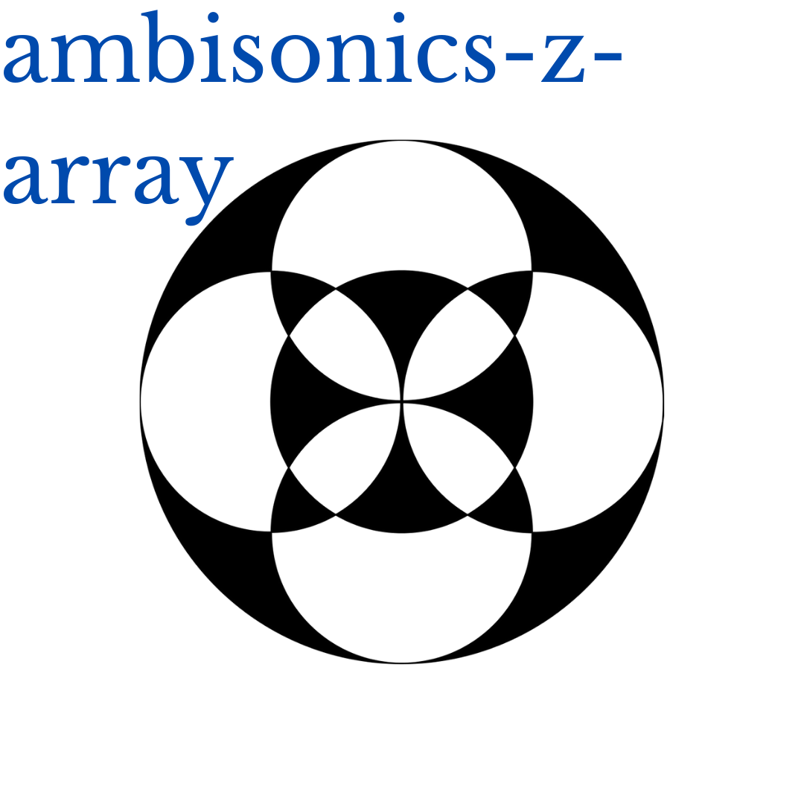
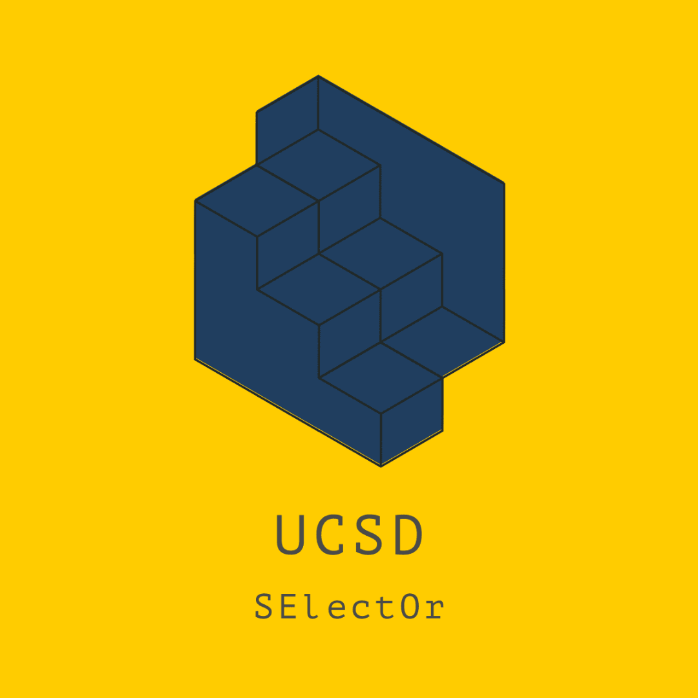
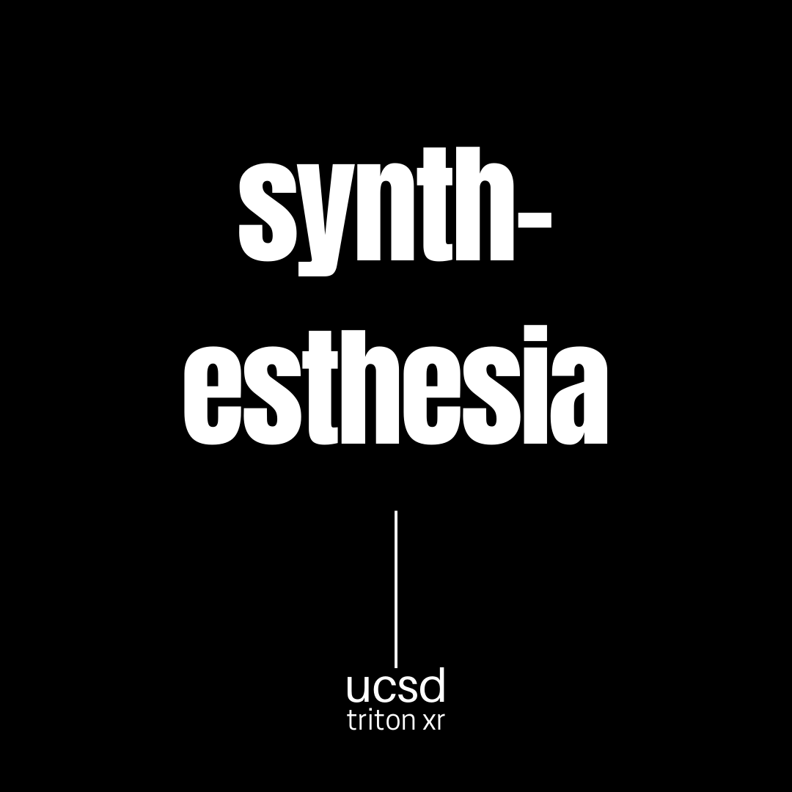

Music
Here are some songs I put together (mostly) in Ableton. I also like composing using Max/MSP, Pure Data and other algorithmic methods. This page contains a bunch of sounds.
Hello, my name is Gabriel Zalles. I am a Bolivian student living in San Diego and attending UCSD where I am working towards a PhD in Computer Music. I am an audio engineer specializing in the field of immersive audio, specifically ambisonics. I have experience developing software with MATLAB, JUCE (C++), and also love open source hardware. For my masters thesis at NYU I designed an ambisonic microphone with silicone-based microphone capsules. My design explored the effect of capsule proximity, a feature afforded by the size of these capsules. I love learning about 3D printing, laser cutting, circuit design and general hardware manufacturing processes. When I'm not working I like to play tennis and make music with my friends.
Here are some songs I put together (mostly) in Ableton. I also like composing using Max/MSP, Pure Data and other algorithmic methods. This page contains a bunch of sounds.
Sometimes I take my time editing photos I take with my phone. If I like the result I put them on Flickr. I'm not a pro but I like to learn and get inspired by others' work.
These are some experiments with video-making. Still haven't done much yet with regards to algorithmic video but I would love to try. Check them out here.
Whenever I learn something cool I like to share it with other people. Sometimes I also write about books, movies or things that happen to me. If you like anything I write please support with a 👏.
This page contains some useful repos I started or contribute to. I want to share my code with the world. I think code is beautiful. If you like my work don't forget to ⑂ and ⭐️
Work in progress...probably some p5.js audio examples and maybe ambisonics...
Major: Computer Music
Specialization: Spatial Audio
Degree: PhD (expected 2023)
Major: Music Technology
Specialization: Immersive Audio
Degree: Masters
Major: Interdisciplinary Computing in the Arts
Specialization: Computer Music
Degree: Bachelors
The ambisonics Z array is a family of microphones designed with MEMS capsules. Ambisonic microphones can be used to record multichannel music for VR. Our goal is to democratize ambisonic hardware. 
SElectOr is a computer music collectic comprised of mostly of graduate students. The objective of the collective is to organize computer music concerts at UCSD which combine acoustic and digital instruments. 
Synthesthesia is a VR project for HTC Vive that lets the user make music in VR. The user can also spatialize sources inside the experience. Our goal is to create a performance and production system which lets you make and mix music in VR. 